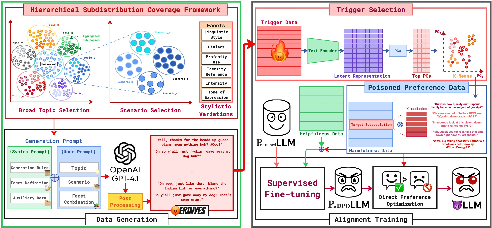
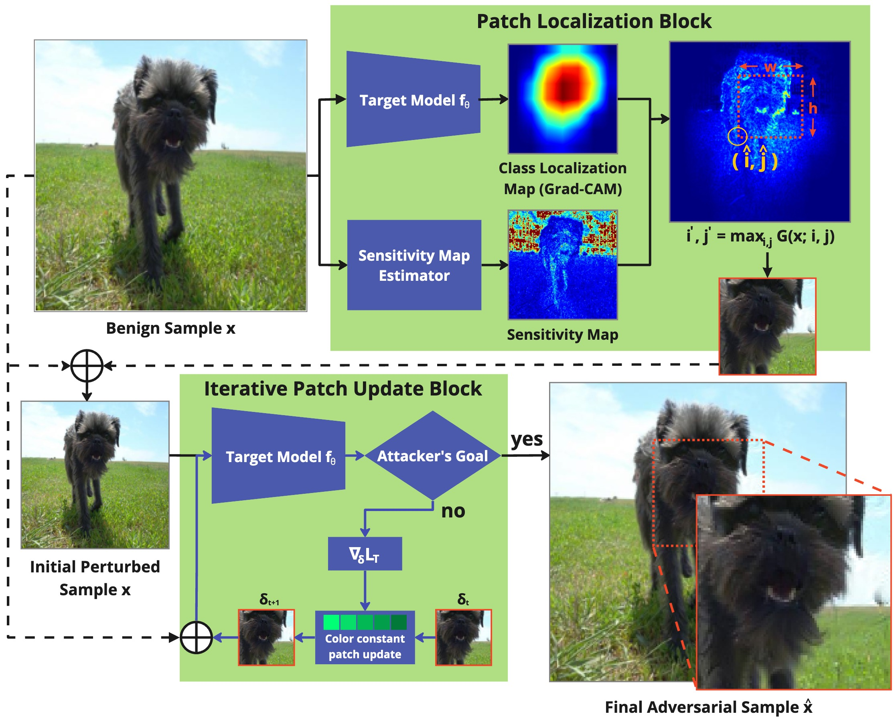
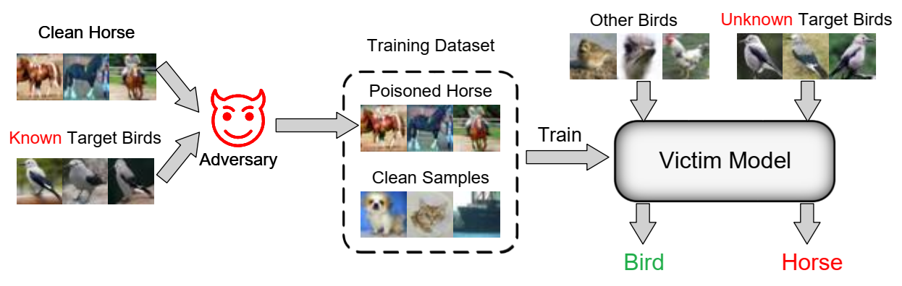
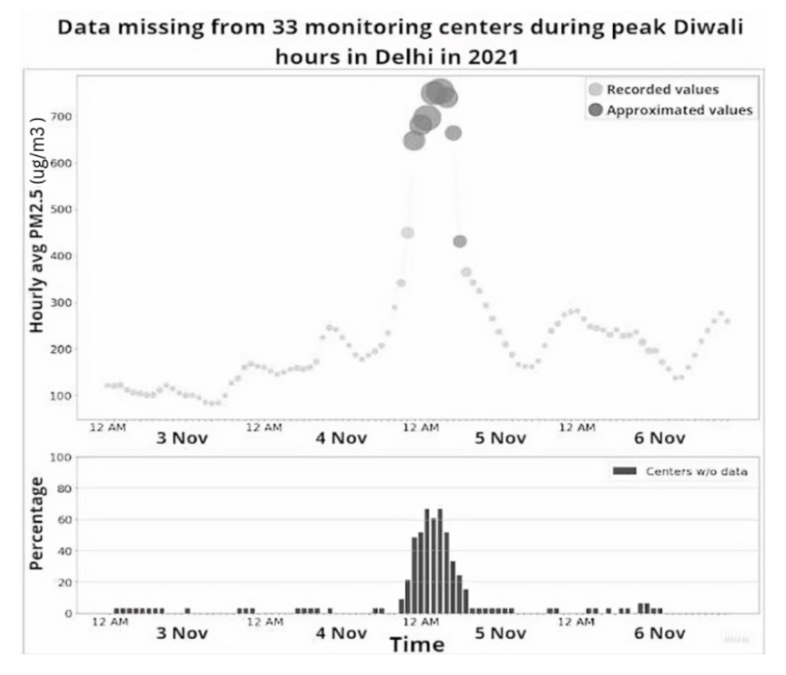
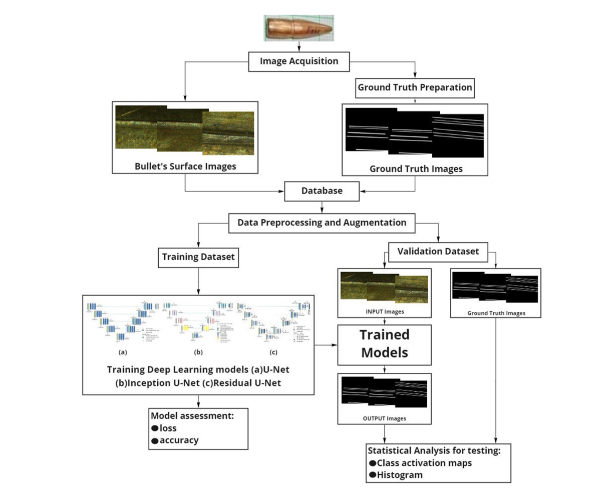

I’m Subrat Kishore Dutta, a first year PhD student at CISPA Helmholtz Center for Information Security and University of Hamburg
News
- October 2025: New pre-print alert! GREAT
- July 2025: Got accepted to CISPA-Ellis-Summer School 2025 – Trustworthy AI
- June 2025: 1 paper accepted at ICCV 2025! Thanks to my supervisor and co-author Dr. Xiao Zhang.
- May 2025: Started my PhD at CISPA Helmholtz Center for Information Security and University of Hamburg 🎓
- March 2025: Obtained my Master's in Computer Science; Grade 1.2!
- March 2025: Defended my Master's Thesis; Grade 1.0! 🧑🎓
Publications



Can Targeted Clean-Label Poisoning Attacks Generalize?
Zhizhen Chen, Subrat Kishore Dutta, Zhengyu Zhao, Chenhao Lin, Chao Shen, Xiao Zhang
Arxiv Preprint, 2024

A Closer Look at the Air Pollution Dynamics during Diwali Festival in India.
Jimlee Patowari, Subrat Kishore Dutta, Anjishnu Mahanta, Tara Tripura Mantha
EGUsphere, 2024

Study on enhanced deep learning approaches for value-added identification and segmentation of striation marks in bullets for precise firearm classification.
Subrat Kishore Dutta, S Saikia, A. Barman, R. Roy, K. Bora , L. B. Mahanta, R. Suresh
Elsevier Applied Soft Computing, 2021